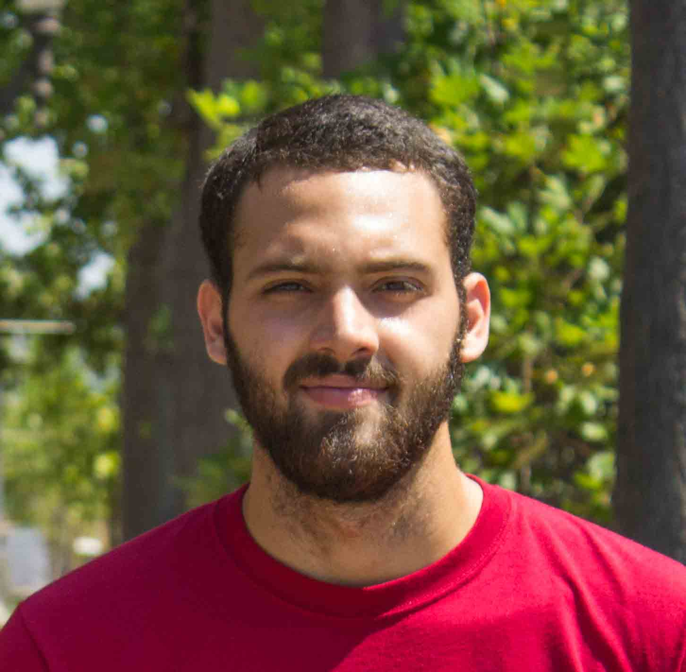
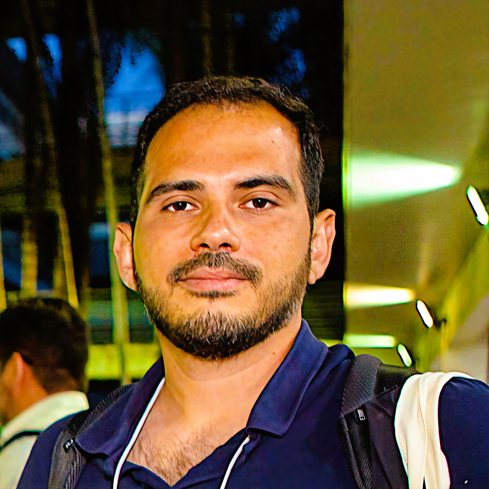
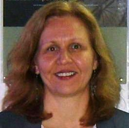
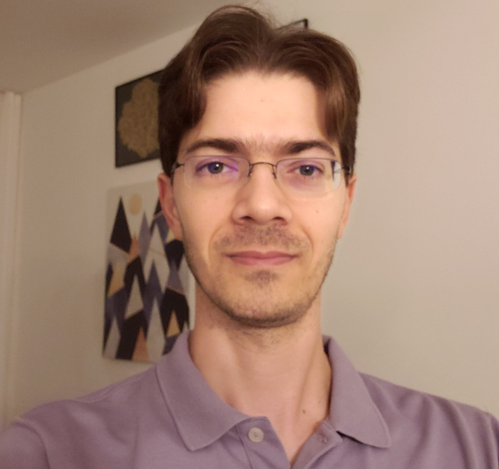
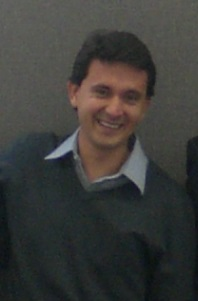

Corpo Docente
Todos os professores são doutores do Departamento de Engenharia Elétrica da Escola de Engenharia da UFMG, com ampla experiência acadêmica e atuação direta no curso de graduação em Engenharia de Sistemas da universidade. O curso de graduação é reconhecido com nota 5 (máxima) pelo MEC e 5 estrelas pelo Guia do Estudante e pelo Guia da Faculdade.

Prof. André Costa Batista
Coordenador

Prof. André Costa Batista
Coordenador
Possui graduação (2019/1) em Engenharia de Sistemas pela Universidade Federal de Minas Gerais (UFMG), com participação no GS/CSF - Graduação Sanduíche - Programa Ciência Sem Fronteiras na University of Southern California (2015/2-2016/1), tendo a CAPES como instituição de fomento. Possui doutorado (2023/2) em Engenharia Elétrica pela UFMG. Atualmente é Professor Assistente do Departamento de Engenharia Elétrica da UFMG (DEE/UFMG) e integrante do Grupo de Pesquisa em Otimização e Projeto Assistido por Computador (GOPAC/UFMG) e do Operations Research and Complex Systems Laboratory (ORCS Lab/UFMG). Já foi Professor Substituto no Departamento de Engenharia Elétrica (DEE-UFMG). Possui experiência na área de Engenharia de Sistemas, Otimização, Computação Evolutiva, Eletromagnetismo Computacional, Problemas Inversos e Imageamento em Micro-ondas.

Prof. Michel Bessani

Prof. Michel Bessani
Possui graduação (2012), mestrado (2015) e doutorado (2018) em Engenharia Elétrica pela Escola de Engenharia de São Carlos da Universidade de São Paulo (EESC-USP). Desde agosto de 2018 é professor do Departamento de Engenharia Elétrica da Escola de Engenharia da Universidade Federal de Minas Gerais (DEE-UFMG). Atualmente é colíder do Grupo de Pesquisa Operacional e Sistemas Complexos (Operations Research and Complex Systems, ORCS) e membro do Grupo de Otimização e Projeto Assistido por Computador (GOPAC). Sua pesquisa situa-se na interseção entre a Otimização sob Incerteza e a Inteligência Artificial Bayesiana para o suporte à decisão em sistemas críticos. Desenvolve técnicas e algoritmos com dados reais para criar modelos que preveem eventos, evitam falhas, melhoram o desempenho, a resiliência e a confiabilidade e reduzem custos e riscos. Sua pesquisa tem aplicação em vários setores, como energia, saúde e logística.

Profa. Ana Liddy Cenni de Castro Magalhães

Profa. Ana Liddy Cenni de Castro Magalhães
Professora do Departamento de Engenharia Elétrica da UFMG, é a primeira profissional da área acadêmica na América Latina a alcançar o título de ESEP (Expert Systems Engineering Professional) — o nível mais alto de certificação do INCOSE. Possui graduação em Ciência da Computação pela Universidade Federal de Minas Gerais (UFMG - 1987), mestrado em Ciências da Computação e Matemática Computacional pela Universidade de São Paulo (USP - 1994), doutorado em Engenharia Elétrica pela Universidade Federal de Minas Gerais (UFMG - 2000), especialização em Melhoria de Processos de Software pela Universidade Federal de Lavras (UFLA - 2004) e MBA em Engenharia e Inovação pela UNISEB (2016). Trabalhou como Programadora e Analista de Sistemas na Construtora Andrade Gutierrez, como Gerente de Pólo Computacional e Analista de Sistemas na UNESP, como Gerente de Tecnologia na ATAN Sistemas (atual Accenture Automation & Industrial Solutions), como Professora Adjunta na Faculdade Pitágoras, como Professora Colaboradora na Universidade Federal de Lavras (UFLA), como Professora de Pós Graduação na Universidade FUMEC (lato sensu e stricto sensu), como Analista da Qualidade Sênior na FITec Inovações Tecnológicas e como Consultora em Melhoria de Processos pela SWQuality Consultoria e Sistemas, MSX International e QualityFocus Consultoria e Serviços em TI. Atualmente é Professora Associada na Escola de Engenharia da UFMG, Consultora em Melhoria de Processos com ênfase nos modelos CMMI e MPS (Software e Serviços de TI), bem como Implementadora, Instrutora, Avaliadora Líder e Auditora do Programa MPS.BR (Softex), além de Consultora em Melhoria da Gestão da Pesquisa, Desenvolvimento e Inovação pelo Projeto MGPDI (Softsul). Possui mais de 30 anos de experiência na área de Ciência da Computação, com ênfase nas áreas de Engenharia e Qualidade de Software e Sistemas, Gerência de Projetos, Empreendedorismo e Inovação, atuando principalmente nos seguintes temas: melhoria de processos de software, serviços e sistemas segundo os modelos CMMI e MPS (SW e SV); metodologias ágeis para desenvolvimento e gerenciamento; gerência de projetos; engenharia de sistemas; empreendedorismo e inovação.

Prof. Lucas de Souza Batista

Prof. Lucas de Souza Batista
Possui graduação (2007/02), mestrado (2009/01) e doutorado (2011/02) em Engenharia Elétrica pela Universidade Federal de Minas Gerais, com período de doutorado sanduíche na Universidade Federal de Santa Catariana (2009). Atualmente é Professor Associado do Departamento de Engenharia Elétrica da UFMG (DEE/UFMG) e integrante do Grupo de Pesquisa em Otimização e Projeto Assistido por Computador (GOPAC/UFMG), do Grupo de Pesquisa em Redes Inteligentes e Sistemas Autônomos (GPRISA/UNITINS), e do Operations Research and Complex Systems Laboratory (ORCS Lab/UFMG). Atua nos cursos de graduação em Engenharia Elétrica, Sistemas, Controle e Automação, Aeroespacial e no Programa de Pós-Graduação em Engenharia Elétrica (PPGEE/UFMG). É membro da Sociedade Brasileira de Pesquisa Operacional (SOBRAPO) desde 2025. Possui mais de 80 trabalhos publicados entre periódicos, congressos e capítulos de livros nacionais e internacionais. Já orientou e coorientou 8 teses de doutorado e 8 dissertações de mestrado. Possui experiência na área de Engenharia Elétrica e Engenharia de Computação e Telecomunicações, com ênfase em Otimização de Sistemas Complexos, Inteligência Computacional, Computação Evolucionária, Otimização Combinatória, Otimização Multiobjetivo e Teoria da Decisão. Informações adicionais podem ser acessadas nas seguintes bases de dados: ISI (ISI ResearcherID No. O-9787-2014), Google Scholar (Lucas' Google Scholar Profile), Scopus (Scopus Author ID: 35179184000), ORCID ID (orcid.org/0000-0002-7444-3440), Research Gate (Lucas' Research Gate Profile), Academia (UFMG Academia), Somos UFMG (Somos UFMG), Escavador (Lucas' Escavador Profile).

Prof. Diogo Batista de Oliveira

Prof. Diogo Batista de Oliveira
Possui graduação em Engenharia Elétrica (2004), com ênfase em Sistemas Elétricos de Potência pela Universidade Federal de Minas Gerais (UFMG). Possui mestrado (UFMG - 2007) e doutorado (UFMG - 2011) em Engenharia Elétrica na área de Sistemas de Computação e Telecomunicações. Tem experiência na área de Engenharia Elétrica, atuando principalmente nos seguintes temas: eletromagnetismo aplicado e computacional, aplicações envolvendo aquecimento por micro-ondas, sistemas de RFID, otimização de dispositivos eletromagnéticos, problema inverso, radar de penetração de solo e projeto de antenas. Trabalhou como pesquisador associado, desenvolvedor de projetos e consultor na empresa ENACOM, no pólo de tecnologia de Belo Horizonte (BH.TEC). Trabalhou em diversos projetos de pesquisa e no desenvolvimento de projetos tecnológicos, com a geração de novos produtos e patentes. Atuou como coordenador técnico e teve experiência em gerência de projetos. Atualmente, é professor adjunto no Departamento de Engenharia Elétrica da UFMG. Atua no Programa de Pós-Graduação em Engenharia Elétrica e no curso de Engenharia de Sistemas no qual trabalha com a aplicação de MBSE/SysML na modelagem de sistemas e processos.